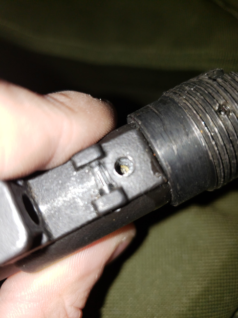

Airsoft
Project Alpha-556 | WE TECH M4 RAPTOR GBBR
Specifications
Brand: WETTI
OPEN BOLT SYSTEM
Platform: AR-15 Platform
Real Steel Support: Yes
Gas Type: Propane & Green Gas
Firing Modes: Semi-Automatic, Full-Automatic, Safety
Muzzle Velocity: 380fps /w 0.20g BBs
Barrel Length: 260mm
Planned Modifications, Comments, and Links
To be updated.
Issues & Problems
-Lost my takedown springs and detents and need replacements
-Dust cover rod broke and needs to be replaced
-Dust cover rod broke and needs to be replaced
Gunsmithing Project | GHK AK-74 GBBR
Specifications
Brand: GHK
CLOSED BOLT SYSTEM
Platform: AK Platform
Real Steel Support: Yes
Gas Type: Propane & Green Gas
Firing Modes: Semi-Automatic, Full-Automatic, Safety
Muzzle Velocity: 370 - 420 FPS (w/ 0.20g BBs)
Inner Barrel Length: 400mm
Length: 37"
Weight: 7.5 lbs
Planned Modifications, Comments, and Links
replace and upgrade the output valve with a "CQB Master High Flow Output Valve"
CQB Master High Flow Output Valve for GHK AK Airsoft GBB Rifles
(https://www.herooutdoors.com/cqb-master-high-flow-output-valve-for-ghk-ak-airsoft-gbb-rifles/)
M4/M16 Grip Adapter for more ergonomic grips
Angry Gun M4/M16 Grip Adapter For GHK AK GBB Series Rifle
(https://www.herooutdoors.com/angry-gun-m4-m16-grip-adapter-for-ghk-ak-gbb-series-rifle/)
Railed Rear Sight
LCT CNC Aluminum Railed Rear Sight for AK Series Rifles
(https://www.herooutdoors.com/lct-cnc-aluminum-railed-rear-sight-for-ak-series-aeg-rifles/)
Sling Adapter that installs on pistol grip
NorthEast Airsoft QD Sling Adaptor for GHK Airsoft AK Gas Blowback Rifles
(https://www.herooutdoors.com/northeast-airsoft-qd-sling-adaptor-for-ghk-airsoft-ak-gas-blowback-rifles-version-v3qd/)
Aluminum hop up unit internal upgrade (idk where this installs or how)
RA-Tech Aluminum CNC hop-up unit for GHK AK Gas Blowback Rifles
https://www.herooutdoors.com/ra-tech-7075-aluminum-cnc-hop-up-unit-for-ghk-ak-series-gas-blowback-rifles/
Issues & Problems
Removal of Sling Mount on the handguard retainer for the purpose of modern handguard installation
Modification of upper gas tube rail system to remove wings that prevents handguard installation
Rear hex screw on the stock mount is stuck, requires a stripped screw remover, and possible damage to the AK-74 stock mount.. if so, will require some possible screw changes.
>new hex screws are required to replace AK-AR adapter screws as both are destroyed
entire front of gun wobbles, possibly loose rivets or not tightened internals? not sure.. this is a real problem right now but not much can be done.
internal nozzle assembly is destroyed and needs to be replaced, preferably with a superior part:
TNT Airsoft High Flow Air Nozzle Kit for GHK AK Series GBB Rifles
(https://www.herooutdoors.com/tnt-airsoft-high-flow-air-nozzle-kit-for-ghk-ak-series-gbb-rifles/)
Missing Trigger Spring:
Missing Front Sight Screw:

Muzzle Break is stuck on:
Airsoft Guns | Collection
PISTOL
WE Glock 17 GEN4 Desert Tan Edition
RIFLE
GHK AK-74
WETTI M4 RAPTOR
KJW KC-02 V2 Tactical Carbine
SHOTGUN
[ Nothing to show here! ]
SNIPER / LONG RANGE
[ Nothing to show here! ]
Other | Collection
GEAR
[ Nothing to show here! ]
TOOLS
[ Nothing to show here! ]
Modifications, Builds & Presets
To be updated.
Goal Purchases List
To be updated.
Labeled Parts Guide - WE 17 SERIES
This section contains Labeled Parts Guides created by me for personal use and to share online.WE 17 Series - Slide & Nozzle - 1 of 5
{kind=link}
WE 17 Series - Magazine - 2 of 5
{kind=link}
Essential Guide to Gas Powered Guns
I did not write this, it is simply here for reference.If you fill the mag and gas begins to spill or sputter, STOP. If you can’t detect or are not sure when the magazine is full, 6-12 seconds of filling the mag should suffice. If the amount you put in doesn’t shoot all the rounds, adjust the time accordingly. Allow the magazine to warm up to room temperature before attempting again. This is usually about 5-6 minutes. If you are able to form a tight seal and fill correctly, allow the magazine to warm to room temperature. When discharging your magazine, your impulse is to press the gas release valve usually located on the top-rear side of the magazine, causing all the gas to dispel at once. Do NOT do this!! Releasing the gas this way will not only wear out the seals faster, but it can freeze the O-rings in your magazine, damaging them permanently! The safest way to discharge a gas gun is to fire it until it runs out of gas, guaranteed.
After usage please leave or insert a small amount of the appropriate gas, enough for 2 - 3 shots is recommended. Do not keep them in storage while fully charged or completely empty. This will allow the O-Rings of the magazine to remain properly lubricated while in storage.
Fire the gun in WARM weather. Use during the cold seasons is not advised. They will not cycle completely or fire well and will use more gas than normal. This is because in colder weather the gas loses pressure, and it will take more gas per shot to expel it from the barrel. Rapid-firing of the gas-gun will also cause the gun to freeze up, resulting in damage to the magazine or gun. Instead, fire the gun at a slow or steady rate of fire. These problems are not as prone to occur during the hotter seasons or warmer weather.
As with most high-tier or high-maintenance guns, you want to use high quality BBs whenever possible. This prevents jamming or other problems, and increases accuracy. In the case of almost all gas guns, .12s are NOT recommended.
Even a little bit of lubrication after every use goes a long way to increasing your gun’s lifespan. Using 100% Pure Silicone Oil, you should lube the slide and any and all moving parts. If you ask around, most people would highly advise that you do not use: Hoppes #9, WD-40 or other petroleum based lubricants as will damage the guns permanently. Some “100%” Silicone oil brands actually have other chemicals that can also damage your gun. For a safe bet, buy oil that is recommended by most other airsofters, or buy oil specifically designed to be used in air soft guns. Be sure to also spray silicone oil into the top nozzle of the magazine well every 5-6 magazines uses. This is done by pressing the top release valve on the the mag while putting a quick spray of silicone into the top rubber exhaust valve. This will keep the seals and O-Rings properly lubed for a lifetime of use. For further information on how to lube your specific gas gun, refer to a manual or even better, look into it online, asking others who own the same gun as you on how to properly maintain your gun.
The amount of gas consumed and lost depends upon a few factors. Namely, the temperature of your environment, how much you are shooting, and the gun itself (it's design dictates how much gas is consumed per shot). Non-blowback guns use around the same amount of gas as Blowback, but since it doesn't expend gas on physically pushing a slide back or otherwise creating a blowback effect it can put more gas into actually propelling the BB.
Gasses you can use in your guns
This is the weakest gas available. It is common air, and is also known as duster gas. Cans of this can be found at most computer stores. It is possible to use this in gbb mags, with the purchase of an adapter. Stock TM pistols are meant to be used with this gas.
This is one of the most common gasses. Most gas guns out there can use this gas without upgrades; one exception being TM's (explained above). Green Gas is simply propane with added silicone and added perfume (since propane smells like fried onions). This is why propane is almost always recommended (explained below)
This is the same exact gas that is used in the small camping stoves. It costs about $3-5 a can, and is about as strong (maybe a little stronger) than Green Gas. In order to use propane, you simply have to buy a propane adapter, screw it on, and spray some silicone oil inside the adapter every ~4 mags. This is often recommended over Green Gas as it's cheaper in the long run.
This is an airsoft-specific gas. It is stronger than propane/green gas, and brings lubrication and scent. Be aware that if you use this gas, your gun will degrade faster than normal. Also, some guns will not be able to handle red gas.
This is the strongest of all the common gasses used in airsoft. Only guns made to handle CO2 will be able to use it, and even they will not last a long time. It is a VERY strong gas. These are the small 12g canisters that you find at a few sports stores, plus a few other places, and requires special CO2 mags since the canister goes in the actual magazine.
Gas brands & Recommended Gas
KSC/KWA: use HFC134a gas unless equipped with a metal slide. If equipped with metal slide upgrade use HFC 22 or Green Gas. Use with Red Gas will void warranty.
Western Arms: HFC 134a gas is recommended.
Use with any other gases (such as HFC22 or Green Gas) will void warranty.
KJW, Y&P, STTI, HFC, other Taiwanese guns: HFC22 or Green Gas is recommended. Using HFC134a is not powerful enough. Use with Red Gas will void warranty.
Maruzen, Marui: HFC 134a gas is recommended.
Use with any other gases (such as HFC22 or Green Gas) will void warranty.
Rushin: HFC 134a gas is recommended. Use with any other gases (such as HFC22 or Green Gas) will void warranty.
Tanaka: HFC 134a gas is recommended. Use with any other gases (such as HFC22 or Green Gas) will void warranty.